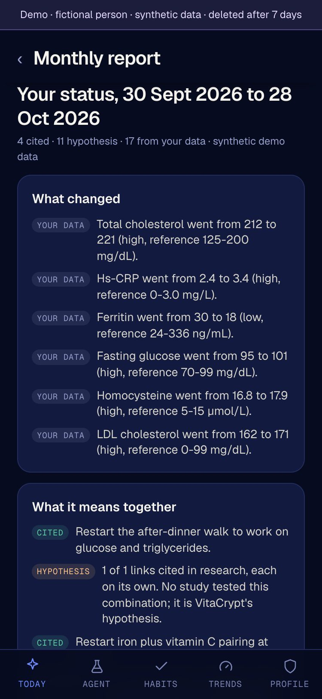
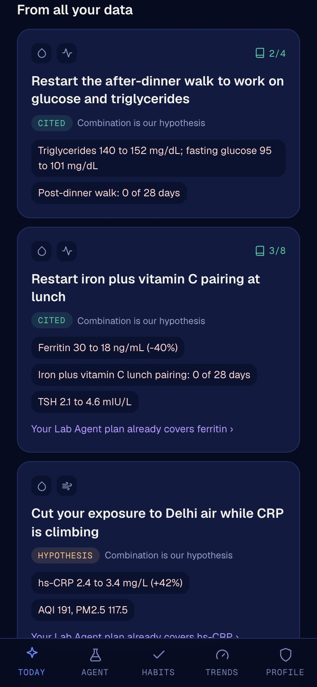
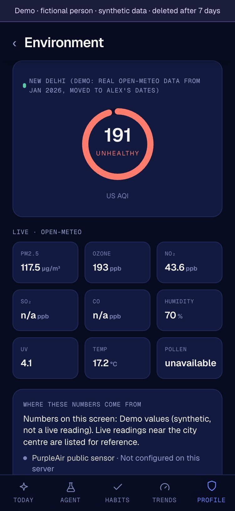
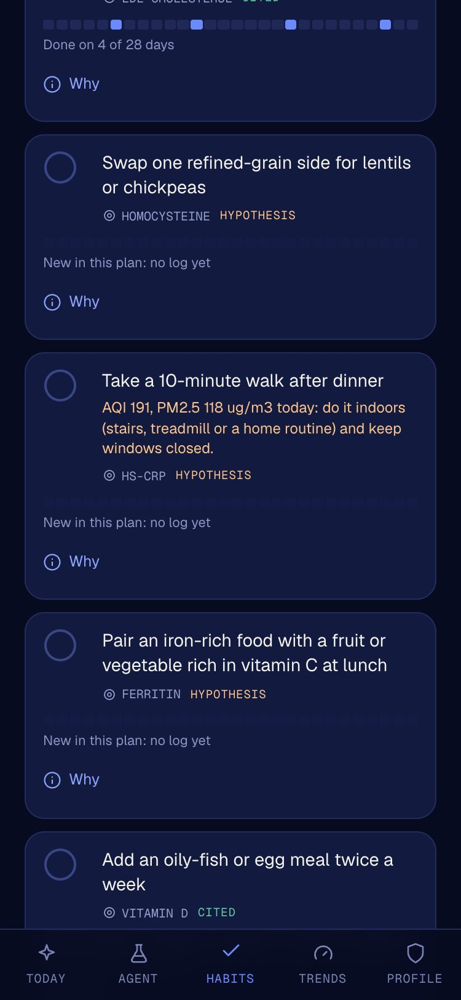
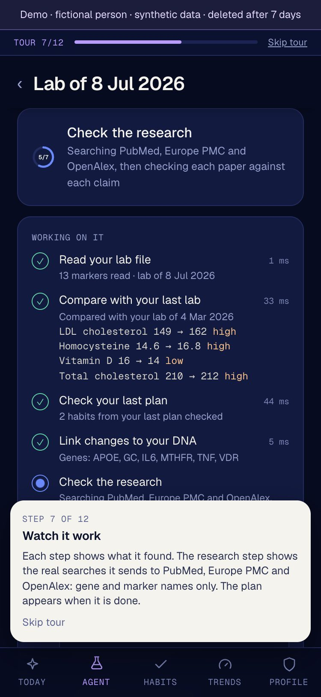
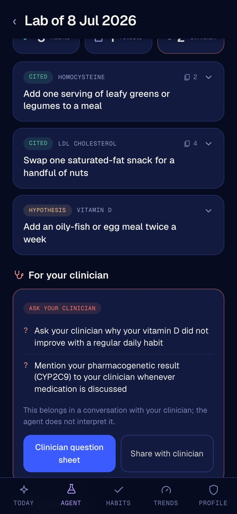
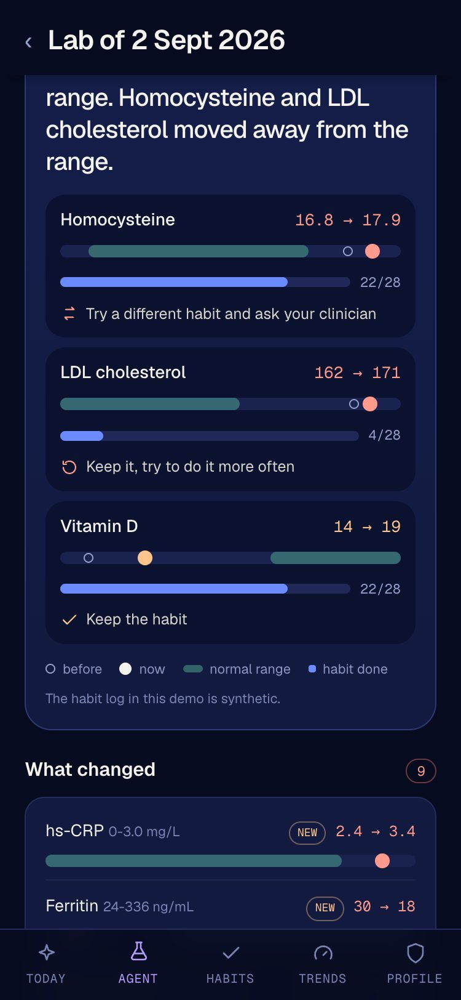
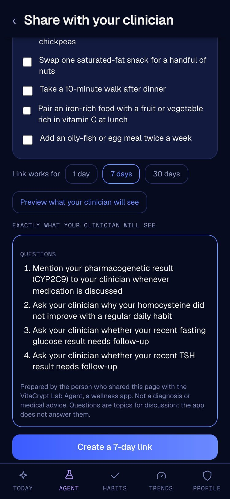
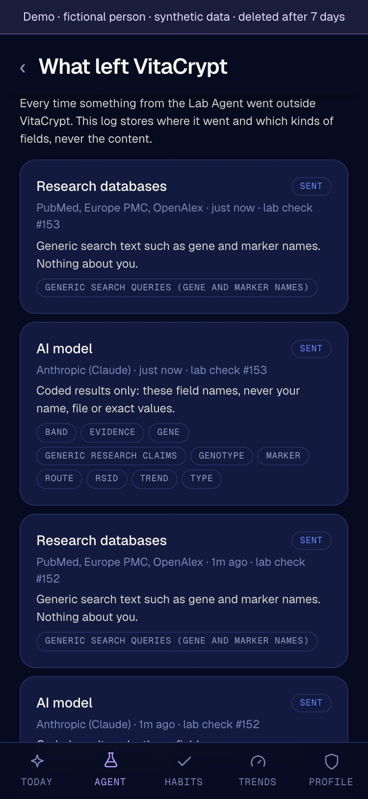

Air, DNA and labs in one profile · Lab Agent
VitaCrypt reads DNA, labs, wearables, microbiome, check-ins and the air you breathe as one profile, checks every link against research, and its Lab Agent turns it into a plan that it follows up.
Paul Burg, solo founder · Early-stage MVP · Guided live demo on synthetic data

app.vitacrypt.xyz/demo · no sign-up, no password
01 · The problem
DNA in one report, labs in a PDF, sleep in a watch app. The air you breathe is in none of them.
Each app shows its own numbers. Nobody checks later whether what you changed worked.
Advice mixes studies with guesses and sales. And the 23andMe breach exposed 6.9 million people’s data.
Health AI today mostly reads one source and explains it. It does not read the whole person, and it does not come back.
VitaCrypt · 02
02 · VitaCrypt: four pillars, one profile
DNA, labs, wearables, microbiome, check-ins, environment in one profile
Every link checked against PubMed and Europe PMC; no invented PMIDs
Your genes × your world: the same lab reads differently by genotype and air
Minimized before anything leaves, encrypted per user; all model calls go to Claude today
We have not found another product that reads all of these together.

Live app, fictional person, synthetic data · 03
03 · Holistic, in practice
AIR · PM2.5 mean 125 µg/m³, 56 days
LAB · hs-CRP 1.6 to 2.1 mg/L
DNA · IL6 and TNF variants
“Watch inflammation in heavy-pollution months”, labelled Hypothesis: each link cited, the combination is ours.
Today’s air changes the plan: the walk habit becomes “AQI 191: do it indoors”.


Live app, Alex moved to New Delhi (real Open-Meteo archive air), synthetic data · 04
04 · The Lab Agent: the profile, in action
| Definition | Lab Agent, as built |
|---|---|
| Goal | Bring out-of-range markers toward range, with no clinical advice |
| Decisions | Cited, Hypothesis or Ask your clinician; keep, swap or retire habits |
| Tools | Lab reader, DNA annotation, PubMed, Europe PMC, AI judge, maps |
| Actions | Habits, retest date, reminders, clinician link, lab order (sandbox) |
| Multi-step plan | Seven fixed steps per lab; a plan over weeks to the next lab |
| Other systems | Telegram, calendar, Junction (US sandbox), OpenStreetMap, Anthropic |
| Learns | Next lab vs its own plan and the habit log |
No chat box. The visitor watches each step and the real search queries.

Live run with the guided tour, step 7 of 12 · 05
05 · Decisions you can check
Retrieved papers support it; PMIDs shown.
Not confirmed by a cited study yet.
Clinical topics become neutral questions.
Reference, not prescription: supplements appear only as official values for adults with their source (NIH), never as a dose chosen for you. No diagnoses.

Live app, fictional person, synthetic data · 06
06 · Learns from results
| Marker and habit log | Decision |
|---|---|
| Moved away, habit done 22 of 28 days | Swap the habit, ask the clinician |
| Moved away, habit done 4 of 28 days | Keep it, do it more often |
| Moved toward range | Keep the habit |
| Back in range | Retire the habit |
Live run on the second demo lab: homocysteine 16.8 to 17.9 with the habit done on 22 of 28 days, so the agent swapped it and added a clinician question.

Live app, fictional person, synthetic data · 07
07 · Actions in the real world
Calendar file and Telegram reminders
Private page, no name, 1 to 30 days, withdraw any time
Junction lab-ordering sandbox, US only; simulated in the demo
OpenStreetMap search by city, nothing about your health

Live app, fictional person, synthetic data · 08
08 · Data protection, as built
All model calls go to Claude today. Demo: fictional person, private copy deleted after 7 days, uploads off, outbound simulated.

Live app, fictional person, synthetic data · 09
09 · Why VitaCrypt
| What matters | Typical health AI today | VitaCrypt |
|---|---|---|
| Whole person | One source at a time | DNA, labs, wearables, microbiome, check-ins, air together |
| Personal | Rarely combines genotype with environment | Your genotype × your local air and climate |
| Evidence | Answers without a label per claim | Each item Cited (PMIDs) or Hypothesis; no invented PMIDs |
| Follow-up | Explains a report when asked | An agent that checks its own plan at the next lab |
| Action | Read only, or inside one clinic network | Reminders, clinician link, lab order, each after a tap |
| Safety | Varies by product | No diagnoses, no personal doses; clinician questions |
| Privacy | Full records shared with the assistant | Lab Agent run: only coded fields; sends listed in the app |
| Incentive | Some sell supplements or own services | No token, no DAO, no supplement sales, no affiliate fees |
Typical: Amazon Health AI, ChatGPT, Claude, Copilot, Function; public pages, Oct 2026. Vita App (VitaDAO) combines labs, wearables and AI; its public pages, Nov 2026, show no local air input and no plan-to-retest check; not tested from inside · 10
10 · Business model and cost
~$0.02
per agent run, measured (2 model calls)
$0.02-0.06
model cost per active user per month, estimate
$30-60
per month infrastructure today, one server
Pre-revenue, no users yet, self-funded · USD · research databases are free · 11
11 · Roadmap, team, ask
| Stage | What |
|---|---|
| Shipped by 5 Nov | Lab files read on our server with identity lines removed; Apple Health export read on the phone; iPhone Shortcut (not yet tested on a real iPhone); body composition; visible warnings when a source fails |
| Founder beta | Paul’s own labs: local lab formats, units, manual correction before a run |
| Production privacy | Zero-retention model terms, keys held by the user |
| Bring your own agent | Lab Agent as an MCP server; x402 pay per call |
| UAE | Partner integration with labs and clinics, roadmap, after legal review |
Paul Burg, solo founder. Designed and built VitaCrypt alone: platform, Lab Agent, live demo. Environmental science: M.Sc., PhD coursework (ABD) in Sustainable Development. Founder of his own ventures since 2011.
Technical mentorship, UAE lab and clinic partners, a hard review of our safety claims.
app.vitacrypt.xyz/demo
Guided tour, about 5 minutes, no sign-up
Early-stage MVP · Not medical advice · Not a medical device · 12